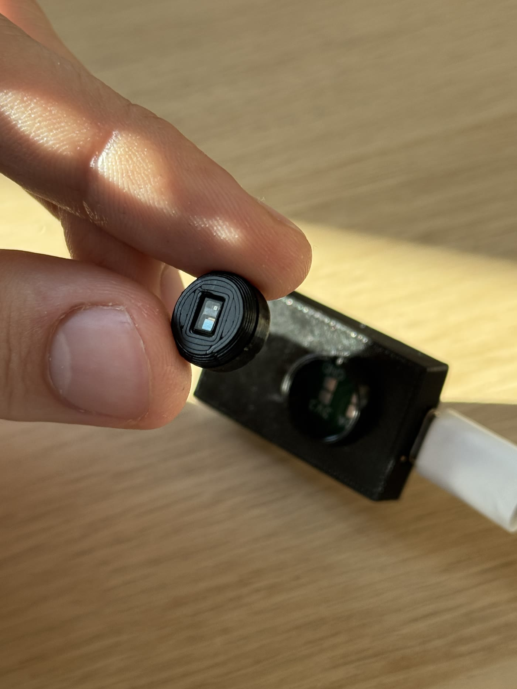

Why it exists
I wear a Whoop. It measures my heart rate, my skin temperature, my sleep and my recovery. I cannot access its raw photoplethysmography signal, change its sensor set or use the service without a subscription.
These limits make the device difficult to use as a research instrument. A sleep lab, a physiotherapist and a factory safety officer each need a different combination of sensors and access to the measurements. Those requirements set the brief for OpenPulse.
How it works

The architecture separates a mainboard from replaceable sensor pucks. The mainboard handles power, storage and Bluetooth Low Energy. Each puck carries its own sensors and identifies itself when connected, so the firmware knows what it is talking to and can configure itself accordingly.
The mechanical connection is a bayonet twist lock. It stays secure under a knock, opens without a tool and gives a tactile end position when someone changes a module on their wrist.
The sensor set specified for the first full puck generation:
| Part | Measures | Note |
|---|---|---|
| MAX86150 | Photoplethysmography and single-lead ECG | Optical + electrical |
| TMP117 | Skin temperature | to 0.1 °C |
| BNO085 | Motion and orientation | 9-axis IMU |
| BME688 | Ambient conditions | Environment |
| ADS1115 | Electrodermal activity | 16-bit ADC |
The current development hardware is one generation behind that, running a Seeed XIAO nRF52840 with a MAX30102, which is deliberate: it lets Roman work on firmware and signal processing while the final board is still moving.
I generate the housing from a CadQuery script. Wall thickness, module diameter and locking geometry are parameters, so a sensor change requires three new values before every part can be regenerated.
What I got wrong
Our first serious pitch at JUGEND GRÜNDET did not place.
In March 2026 we presented at the Munich Chamber of Commerce. I focused on the idea and gave almost none of our three minutes to the working board in a bag under the table. The jury concluded, reasonably, that we did not have working hardware.
After the results I stayed at our stand and put the actual board into the hands of anyone who stopped, including two of the jurors. One of them asked why we hadn't led with it. By the end of the evening we had a scholarship to the UnternehmerTUM Makerspace at TU Munich, which gave us the fabrication access we were actually short of, an offer to apply for a Bavarian innovation voucher, and two contacts we still use. Since then, I demonstrate the hardware at the start of each pitch.
We specified five sensors before a simpler version worked end to end. Building the simpler board exposed problems the specification did not, so we now test complete working versions before adding sensors.
Where it stands
A prototype mainboard has been manufactured and tested, the first thirty boards have come back from fabrication, and sensor modules are being assembled now. Wrist-worn prototypes are the goal for this summer.
The mobile app and the SDK are not finished. The signal-processing algorithms are specified but not validated against reference equipment, which means we can't make accuracy claims and don't make them. It is an actively developed prototype with awards attached, and it is not a certified medical device.

Results
This is the European award, not the global one.
173 countries
€10,000 prize. We reached the final through a jury wildcard after finishing third in our category's public vote with 21.68%.